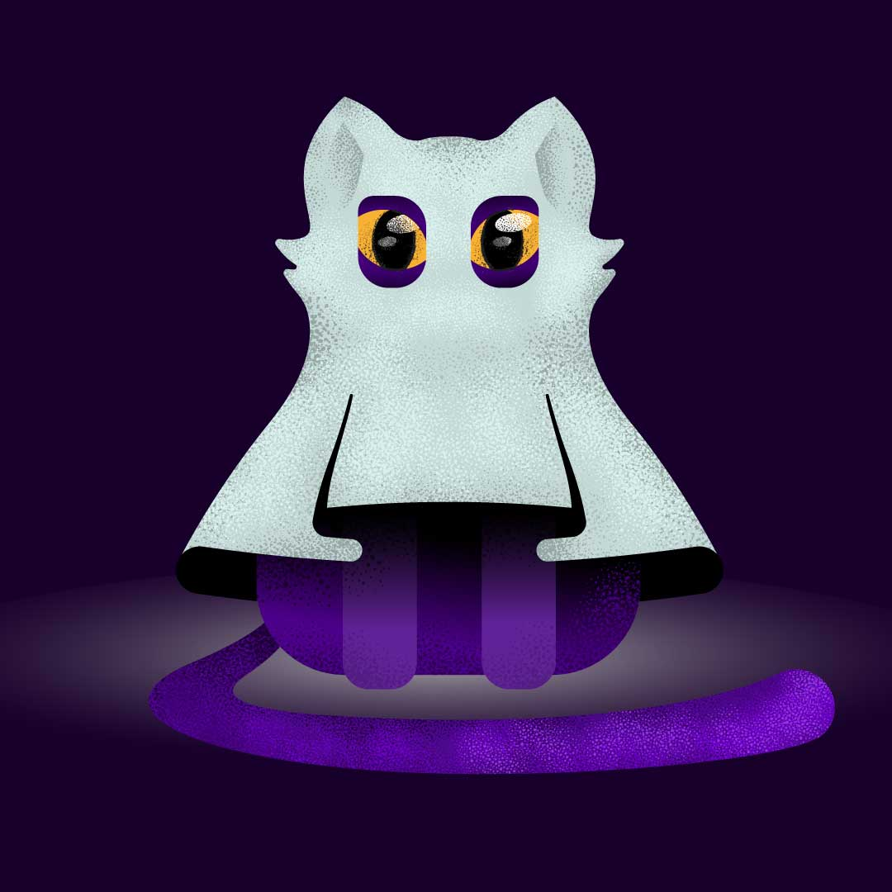
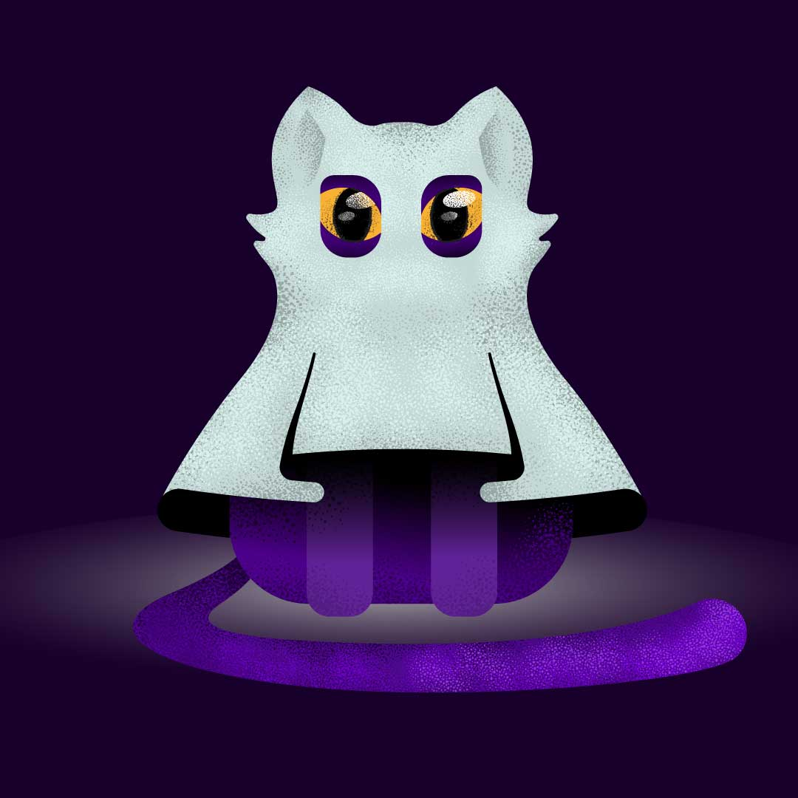
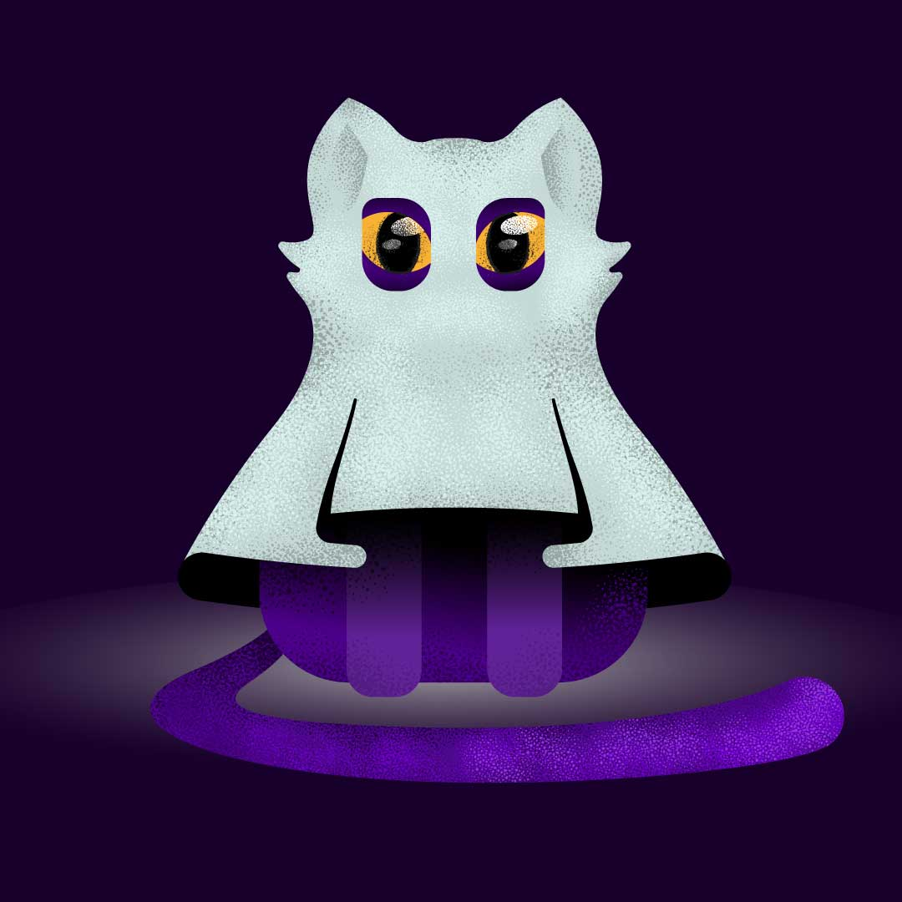

Mi caos, digo...
Mis Proyectos
 


Tras 8 años de peleas intensas con las capas de Photoshop, exportando en 'final_final_v2', y cierres inesperados de Illustrator, aprendí que el buen diseño nace de la paciencia y una pizca de humor. Me apasiona dar vida a marcas auténticas que conectan de verdad, crear identidades visuales que no pasan desapercibidas y soluciones que sí resuelven. Si buscas una mezcla de experiencia sólida, café y cero miedo a los lienzos en blanco, mi portafolio te va a encantar. ¡Pasa, no muerde (a menos que seas un logo en baja resolución)!
